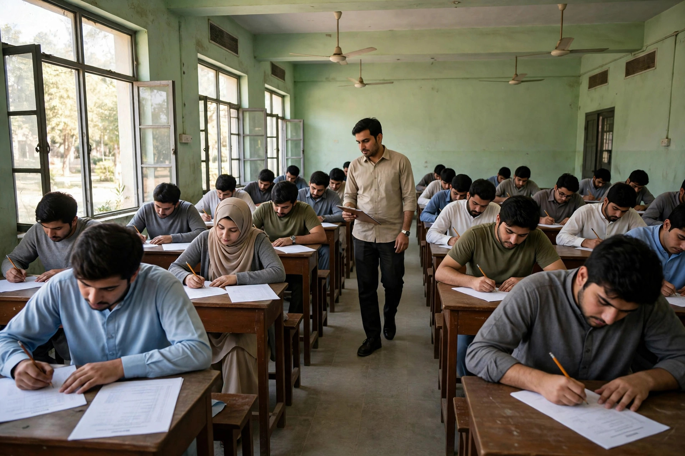

Thousands of jobs and admissions in Pakistan are filled through screening tests run by independent testing services — and two names appear again and again: OTS, the Open Testing Service, and PTS, the Pakistan Testing Service. Both run MCQ-based tests for government departments, companies and institutions, and both can feel confusing if you have never appeared in one before.
The good news is that OTS and PTS tests reward the same kind of preparation. They are screening tests, not deep subject exams: they check your English, basic maths, general knowledge and reasoning speed under time pressure. Prepare those four areas and practise under a timer.
Why OTS and PTS Tests Feel Different
Unlike a commission exam with a fixed syllabus, an OTS or PTS test is built around the job or programme it screens for. A clerk's test leans on English and basic maths; a teaching post may add subject questions; a technical post may include trade-related MCQs. So the first rule of preparation is unglamorous but essential: read the advertisement for your own test. It tells you the question count, time allowed, sections included and whether there is negative marking.
Do not trust a pattern from a WhatsApp group about somebody else's test. Section weightage changes from test to test, and one wrong assumption — like expecting no negative marking when there is — can cost you the merit list. Whenever this guide says "typically", it means the common pattern across many tests, not a promise about yours. Your advertisement and roll-number slip are the final authority.
What the Test Usually Looks Like
Most OTS and PTS screening tests are a single MCQ paper, typically around 100 questions in about 90 to 120 minutes, with four options per question. The paper is usually divided into sections, so you can plan time section by section. English and quantitative ability carry the largest weight in most general tests, followed by general knowledge, Pakistan Studies, Islamiat and current affairs, plus an analytical section testing reasoning rather than memory.
Speed matters as much as knowledge: roughly one minute per question. The candidates who clear these tests answer easy questions first and return to hard ones only if time remains.
English: The Section That Decides Merit
English is where most OTS and PTS tests are won or lost: it usually carries 20 to 30 questions, and every candidate faces the same paper regardless of degree. The tested areas are predictable — synonyms and antonyms, one-word substitutions, idioms, prepositions, spotting errors, sentence correction and short passages. Grammar is tested through usage, not definitions.
Improve daily, not heroically: ten new words a day with synonyms and antonyms, one short passage daily, and drills of the most repeated prepositions and idioms. Practise on English MCQs in timed sets of 20, and keep a notebook of every word and rule you got wrong. Our English vocabulary techniques guide gives a daily system built for exactly this paper.
Maths: Shortcuts Beat Long Methods
The quantitative section tests school-level maths: percentages, ratios, averages, profit and loss, speed and distance, simple interest and basic algebra. The questions are not hard — the trap is time. Solving one percentage question by the long method in two minutes costs you two easier questions elsewhere. Learn the shortcuts: percentage-to-fraction conversions, the unitary method, and quick formulas for average and speed.
Practise 20 sums a day from Basic Mathematics MCQs, timed. Target under 45 seconds for an easy sum, and skip anything needing more than 90 seconds on first pass. Keep formulas on one page, revised every morning, and use rough work in the test.

General Knowledge, Pak Studies and Islamiat
This is the highest-return section because it is pure recall: know the fact, answer in five seconds, and the same facts repeat across tests. Focus on Pakistan first — world capitals and rivers, famous firsts, national symbols, constitutional milestones and key events of Pakistan's history — then everyday science and recent current affairs. Our General Knowledge guide covers the capitals, rivers and firsts examiners return to most.
For Islamiat, revise the Pillars of Islam, major Ghazwat and Hijri years, and the Quran's compilation. For Pakistan Studies, anchor on the 1973 Constitution, the Pakistan Movement's key dates and the country's geography. Revise with General Knowledge MCQs and Pakistan Studies MCQs, and make current affairs a weekly habit — ten minutes of headlines, noted down, beats a month-end cram.
Analytical and IQ: Reasoning, Not Memory
The analytical section surprises candidates who prepared only by memorising facts. It asks you to complete a number or letter series, find the odd one out, solve a blood-relation or direction puzzle, or pick the next figure in a pattern. Nobody can memorise these questions — but everybody can learn the methods. Number series follow a handful of rules: difference, ratio, squares and alternating patterns. Test each rule in order, and an impossible-looking series becomes a 20-second question.
Do ten reasoning questions a day, untimed at first, then under a timer. On test day, skip a puzzle after two failed attempts.
Negative Marking and the Guessing Rule
Some OTS and PTS tests carry negative marking and some do not, so confirm it from your advertisement before deciding any guessing strategy. Where there is a penalty — commonly a quarter mark per wrong answer — blind guessing destroys scores: four wild guesses typically lose a full mark. The safe rule: answer when you can eliminate at least two options, skip when you cannot eliminate any — see our guide to handling negative marking for the maths behind it.
Where there is no negative marking, the rule flips: attempt every question, because a guess costs nothing and can only add marks. Knowing which regime your test uses is worth more than a week of extra study.
A 30-Day Plan That Fits Around Work
Week one is diagnosis: take a full timed mock on the exam simulator, score it section by section, and give your three weakest areas the extra hour. Week two is foundations: English vocabulary and grammar daily, maths formulas and 20 timed sums daily, and one general knowledge topic a day. Week three: one timed section daily, every mistake logged in an error notebook and reviewed next morning.
Week four is full papers only: one complete mock every second day under real conditions — same time limit, no phone, no breaks — with the days between spent on your error notebook and weak areas. The day before, revise only your formula page, vocabulary notebook and error log. For OTS and PTS practice, start from the OTS test page and the PTS test page, and use related screening-test practice to build speed on the same question style.
7 Mistakes That Cost Candidates the Merit List
- Preparing from the wrong test's pattern. Always read your own advertisement first.
- Ignoring English. It carries the most questions and decides merit between equal candidates.
- Solving questions in order. Easy questions first; hard ones on the second pass.
- Guessing blindly under negative marking. Eliminate two options or skip.
- Studying only one subject. Screening tests reward breadth across all sections.
- Never practising under a timer. Untimed practice does not prepare you for a 90-minute paper.
- Skipping the error notebook. Mistakes you do not record, you repeat.
OTS and PTS tests are not a test of genius — they are a test of preparation, speed and calm. Learn the four sections, practise under time, respect your own test's marking rules, and give yourself 30 honest days. The merit list rewards steady work, and that candidate can be you.
- Read your own test advertisement first: sections, question count, time and negative marking vary by test.
- English and maths carry the most weight — practise both daily in short timed sets.
- General knowledge is the fastest marks: fixed, repeated facts answered in seconds.
- With negative marking, answer only when you can eliminate at least two options; without it, attempt everything.
- Week four is full timed mocks only — plus daily review of your error notebook.
Frequently Asked Questions
What is the difference between OTS and PTS tests?
OTS (Open Testing Service) and PTS (Pakistan Testing Service) are separate independent testing organisations, both running MCQ screening tests for jobs and admissions. Their papers follow a similar style — English, maths, general knowledge and reasoning — but each test's exact pattern comes from its own advertisement.
Do OTS and PTS tests have negative marking?
It varies by test. Some deduct a quarter mark per wrong answer; others have no penalty at all. Confirm the marking scheme from your own advertisement or roll-number slip before deciding whether to guess.
How many questions are in an OTS or PTS test?
Most have around 100 MCQs in roughly 90 to 120 minutes, but the exact number and time limit differ by test. Treat these as typical figures and check your advertisement for the confirmed pattern.
How long does it take to prepare for an OTS or PTS test?
Four to six weeks of daily study — two to three hours a day — is enough for most candidates, since the syllabus is school-level English, maths, general knowledge and reasoning. A 30-day plan with timed mocks in the final week works well; the key is daily timed practice, not last-minute cramming.
Start practicing — free, no login needed
195,000+ MCQs · solved past papers · real exam simulator with timer & negative marking